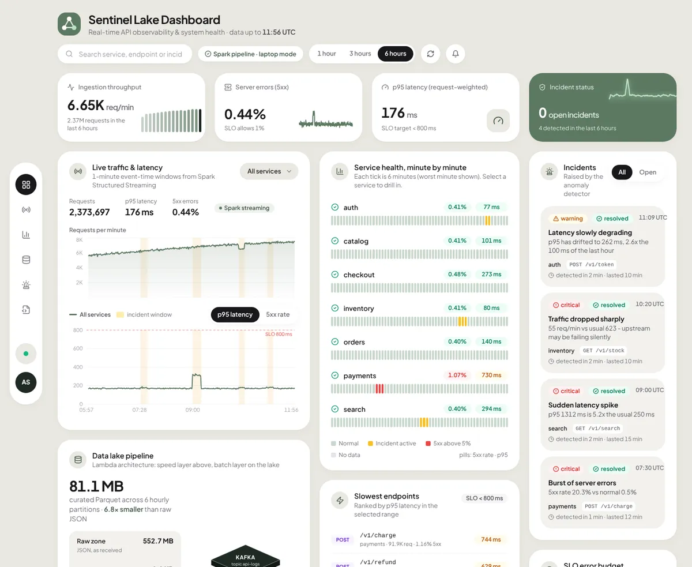
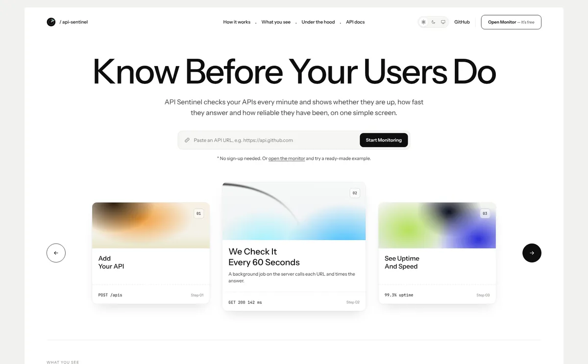
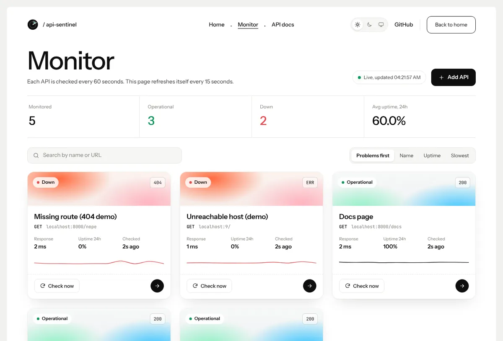
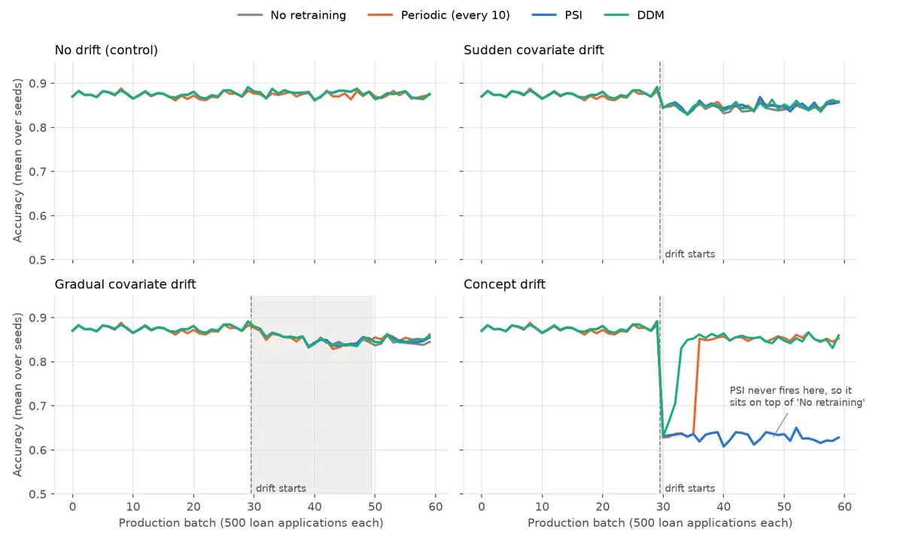

Backend, data and ML engineer
I'm a final-year Computer Science (AI/ML) student at Manipal University Jaipur. I build APIs, streaming data pipelines and ML monitoring, and I measure whether they work.




Projects
Every number here was measured in the project's own repo, and each one links to its code.
Experience
Research, analytics and backend work, most recent first.
About
I'm in the final year of a B.Tech in Computer Science and Engineering (AI/ML) at Manipal University Jaipur, with a CGPA of 8.7 and a place on the Dean's List. I graduate in 2027.
I like work where you can tell whether it worked: uptime over a day, how fast an alert fires, how much accuracy comes back after a retrain. Right now I'm learning system design and building a retrieval-augmented generation (RAG) project.
- Deep Learning, NPTEL, IIT Ropar (2026)
- Introduction to Machine Learning, NPTEL, IIT Madras (2025)
- CCNA: Switching, Routing and Wireless Essentials, Cisco Networking Academy (2025)
- Networking Essentials, Cisco Networking Academy (2025)